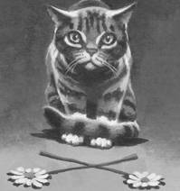

Những vì sao lấp lánh ánh sáng lạnh trên khu rừng vào mùa lá trụi. Một cái bóng màu đen luồn lách dưới những bụi cây – thân gầy với những mảng lông áp sát vào da do sương đêm, trượt vào giữa đám cây như nước luồn giữa những bụi lau sậy. Bộ lông mèo không mềm mượt như trước đây; mà ngược lại, bám sát vào xương để lộ ra một thân hình gầy còm.

Con mèo có bộ lông màu lửa im lặng ngước đầu lên và nếm không khí. Mặc dù màn đêm hoàn toàn yên tĩnh với đám quái vật của Hai Chân, nhưng mùi hôi thối của chúng vẫn bám vào từng chiếc lá trên nhánh cây.
Con mèo trông dễ chịu hơn khi nếm được mùi của bạn đời bên cạnh mình; mùi hương quen thuộc trộn lẫn với mùi thù hận Hai Chân và mùi tang thương. Cô vẫn bước những bước đi kiêu ngạo, nhưng những bước chân không chắc chắn đã tố giác cái bụng rỗng và những đêm mất ngủ.
“Sao Lửa,” bà thở hổn hển khi bước đi. “Anh có nghĩ con gái sẽ tìm thấy chúng ta khi chúng trở về nhà không?”
Bộ lông màu lửa nao núng như thể ông vừa đạp phải gai. “Chúng ta chỉ có thể cầu nguyện thôi, Bão Cát à,” ông mèo nhẹ nhàng.
“Nhưng làm thế nào mà chúng tìm được nơi chúng ta ở?” Bão Cát liếc nhìn bờ vai của ông mèo xám. “Vằn Xám, anh nghĩ chúng sẽ biết chúng ta đi đâu sao?”
“Ồ, chúng sẽ tìm ra chúng ta,” Vằn Xám hứa.
“Làm thế nào mà anh chắc chắn được vậy?” Sao Lửa gầm gừ. “Chúng ta nên cử một đội tuần tra khác để đi tìm chân Lá.”
“Và làm mất nhiều mèo hơn nữa?” Vằn Xám meo.
Đôi mắt của Sao Lửa mờ đục với sự đau đớn và ông vội vã hướng về phía trước.
Bão Cát giật giật đuôi. “Đây thực sự là một quyết định khó khăn,” bà thì thầm với Vằn Xám.
“Anh ấy phải đặt bộ tộc lên đầu tiên.” Vàn Xám rít.
Bão Cát nhắm mắt một lúc. “Chúng ta đã mất quá nhiều mèo trong nửa mùa trăng này,” bà meo.
Một cơn gió đã mang giọng bà đi xa, vì Sao Lửa quay đầu trở lại, ánh mắt lạnh lùng. “Có lẽ tại cuộc tụ họp lần này, các bộ tộc khác cuối cùng cũng sẽ đồng ý là cùng nhau đối mặt với hiểm họa,” ông gầm gừ.
“Cùng nhau?” Một tiếng meo thách thức từ anh mèo khoang. “Ngài đã quên các bộ tộc khác phản ứng thế nào khi ngài nói với họ về điều đó? Bộ tộc Gió gần như đã chết đói, nhưng họ vẫn không chịu thừa nhận. Họ quá ngạo mạn để nhận sự giúp đỡ của những mèo khác.”
“Bây giờ mọi thứ còn tệ hơn, Da Bụi à,” Bão Cát lập luận. “Các bộ tộc có thể sống như thế nào khi những đứa trẻ của họ đang chết đói?” Giọng cô kéo dài khi nhận ra mình đang nói gì. “Da Bụi, tôi xin lỗi,” cô thì thầm.
“Bé đã chết,” Da Bụi gầm gừ. “Nhưng điều đó không có nghĩa là tôi để cho bộ tộc Sấm bị ra lệnh bởi một bộ tộc khác!”
“Không bộ tộc nào có thể ra lệnh cho chúng ta,” Sao Lửa khẳng định. “Nhưng tôi vẫn tin chúng ta có thể giúp đỡ lẫn nhau. Mùa lá trụi gần như đã đến. Hai Chân và quái vật của họ vẫn đang đuổi con mồi của chúng ta đi xa, đi xa hơn nữa, và họ đã đầu độc cả những con còn lại để chúng ta không thể nào ăn nó. Chúng ta không thể chiến đấu một mình.”
Bất ngờ, tiếng gió rít dữ dội qua các nhánh cây, Sao Lửa dừng lại và vểnh tai về phía trước.
“Cái gì vậy?” Bão Cát thì thầm, mắt mở to.
“Có điều gì đó đang xảy ra ở điểm Bốn Cây!” Vằn Xám gào.
Ông chạy về phía trước, với Sao Lửa vội vã chạy theo sau, cùng bầy mèo đồng tộc. Tất cả mèo đứng lại ở đỉnh đồi, nhìn xuống thung lũng.
Ánh sáng, không tự nhiên, sắc nét hơn ánh trăng, chiếu vào một trong bốn cây sồi khổng lồ đã bảo vệ nơi linh thiêng từ biết bao đời nay. Nhiều ánh sáng hơn phát ra từ đôi mắt của quái vật khổng lồ chiếu vào rìa trảng trống. Tảng Đá Lớn – hòn đá bự màu xám mịn là nơi các tộc trưởng hay đứng để giải quyết mọi vấn đề tại cuộc Tụ Họp mỗi mùa trăng tròn – trông thật bé nhỏ như một đứa trẻ đang cúi đầu cạnh đường Sấm Rền.
Hai Chân đứng đầy thung lũng, la hét vào nhau. Một tiếng cắt xé tan không khí, một tiếng nổ vang lên, một tiếng rên rỉ the thé, và một Hai Chân bước ra từ bóng tối. Bầy Hai Chân áp sát vào cây sồi, bụi bay ra từ thân cây như máu phun ra từ vết thương. Một chân trước láng bóng giơ cao trong tiếng hét và đập vào thân cây, đẩy mạnh cho đến khi tiếng la hét của Hai Chân im bặp, và cả thung lũng vang lên bởi một tiếng nứt lớn. Cây sồi nghiêng dần về một phía, cho đến khi rơi nhanh xuống mặt đất. Các nhánh cây của nó nơi loảng xoảng vào nền đất lạnh, sau đó cả không gian bị bảo trùm bởi sự im lặng chết chóc.
“Bộ tộc Sao, ngăn họ lại!” Bão Cát meo.
Không có dấu hiệu nào cho thấy chiến binh tổ tiên đã nhìn ra những gì đang đến với Điểm Bốn Cây. Những ngôi sao lấp lánh lạnh lùng trên bầu trời màu chàm khi Hai Chân di chuyển đến cây sồi tiếp theo, bàn chân trước giết một thân cây khác.
Bầy mèo kinh hoàng đứng nhìn Hai Chân làm việc xung quanh trảng trống cho đến khi cây sồi cuối cùng ngã xuống. Điểm Bốn Cây, nơi bốn bộ tộc gặp nhau trong rất nhiều, rất rất nhiều thế hệ. Bốn cây sồi khổng lồ đang nằm dài trên mặt đất, những nhánh cây của nó vẫn còn run rẩy. Quái vật Hai Chân gầm gừ ở rìa trảng trống, đã sẵn sàng để di chuyển, nhưng bầy mèo vẫn đang bị đóng băng trên đỉnh đồi, không thể di chuyển.
“Khu rừng đã chết,” Lông Bão thì thầm. “Không còn hy vọng nào cho chúng ta.”
“Còn can đảm.” Mắt Sao Lửa lấp lánh khi quay trở lại đối mặt với bộ tộc của ông. “Chúng ta vẫn còn bộ tộc của mình. Chúng ta luôn luôn còn hy vong.”